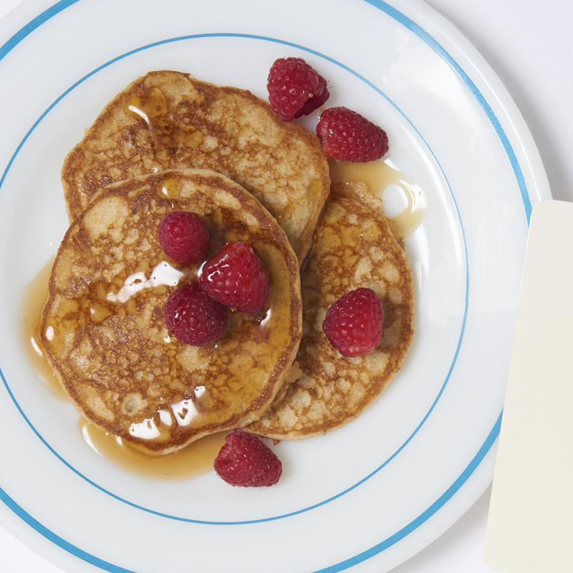

Whole Wheat Pancakes

Description
These Whole Wheat Pancakes are light, easy to make, fluffy and absolutely DELICIOUS
A simple recipe that will only take 50 minutes to prepare, perfect for those lazy morning munchies. If you cant get enough and want more simply just add to the ingredients.
Ingredients
- 1 cup whole wheat flour
- ⅔ cup all-purpose flour
- ⅓ cup wheat germ
- 1½ teaspoons baking powder
- ½ teaspoon baking soda
- 2 tablespoons brown sugar
- 1 teaspoon salt
- 5⅓ tablespoons unsalted butter
- 2½ cups buttermilk
- 2 eggs, beaten
- 3 tablespoons unsalted butter
SERVINGS - 4
Steps
- In a food processor or in a large bowl, combine the whole wheat flour, white flour, wheat germ or oats, baking powder, baking soda, brown sugar, and salt.
- Cut the butter into small pieces with a knife, and add the butter to the flour-mixture. Mix until the mixture has a sand-like consistency.
- Make a well in the center of the flour-butter mixture, and add the buttermilk and eggs. Stir until the liquids are fully incorporated.
- Heat a frying pan over medium heat and grease the surface with 1 tablespoon of butter or oil. Ladle the batter onto the surface to form 4 inch pancakes. Once bubbles form on the top of the pancakes, flip them over, and cook them on the other side for about 2 minutes.